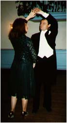

American dances
European dances tend to be refined, as they are based on the court dances of aristocrats, although the waltz was considered scandalous when it first came on the scene.
The Viennese Waltz is an unparalleled expression of elegance and sophisticated love. It is, as Curt Sachs describes it, "exaltation, surrender, and the extinction of the world round about!"
Contra Dancing arose in the 16th century Europe as a distinction between the form of dance the gentry enjoyed while in the country and the stately dances in the town at court.